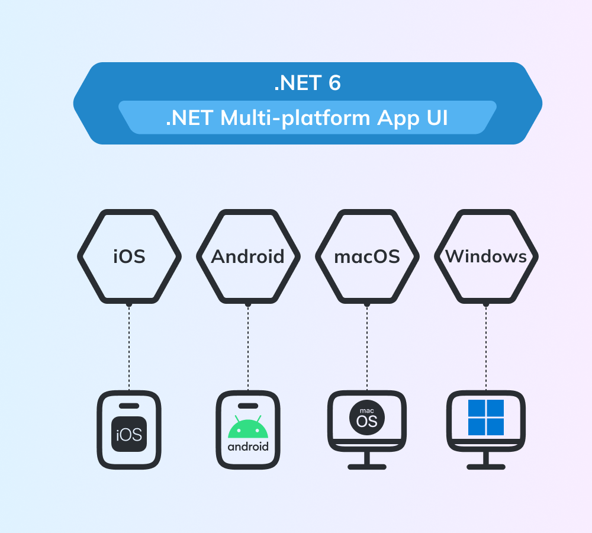
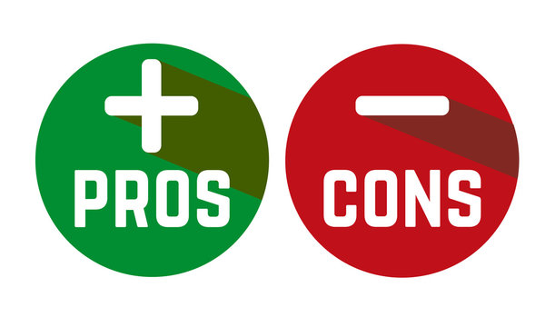

История создания
Язык программирования С# был разработан в 1993—2001 годах группой инженеров компании Microsoft под руководством Андерса Хейлсберга и Скотта Вильтаумота как язык разработки приложений для платформы Microsoft.
К 2000 году у Microsoft были готовы промышленные версии новых технологий и решений для обмена сообщениями и данными, а также для создания Internet-приложений. Была выпущена и новая платформа для разработки под новые решения — .NET. В ней объединились сразу несколько языков программирования, что было в новинку для того времени.
Ещё одним новшеством платформы .NET была технология активных серверных страниц ASP.NET (Active Server Page). С её помощью можно было относительно быстро разработать веб-приложения, взаимодействующие с базами данных. Специально для ASP.NET был создан язык программирования C#. Да и сама ASP.NET была полностью написана на нём.
Краткий обзор языка
C# — это язык с C-подобным синтаксисом. Здесь он близок в этом отношении к C++ и Java.
Будучи объектно-ориентированным языком, он много перенял у Java и С++. Как и Java, C# изначально предназначался для веб-разработки, и примерно 75% его синтаксических возможностей такие же, как у Java. C# также называют «очищенной версией Java». Ещё 10% наш герой позаимствовал из C++ и 5% – из Visual Basic. Оставшиеся 10% C# — это реализация собственных идей разработчиков. Объектно-ориентированный подход позволяет строить с помощью C# крупные, но в то же время гибкие, масштабируемые и расширяемые приложения.
C# уже давно поддерживает много полезных функций:
Далее поговорим о плюсах и минусах C#.
Плюсы -- Минусы
У «шарпа» выделяют много преимуществ:
Но есть у C# и некоторые недостатки:
Пример кода
В качестве примера кода возьмем программу для вычисления площади, высоты, радиусов вписанной и описанной окружности равностороннего треугольника. Ниже приведен код с соблюдением синтаксиса.
using System;
namespace Code_Example
{
internal class Program
{
static void Main(string [] args)
{
Console.WriteLine("Программа для вычисления площади, высоты, радиусов вписанной и описанной
окружности равностороннего треугольника. Введите значение строны треугольника:");
double a = Convert.ToDouble(Console.ReadLine());
if (a != 0)
{
Console.WriteLine("Какой параметр необходимо вычислить? Введите 'площадь', 'высоту',
'радиус вписанной окружности' или'радиус описанной окружности'.");
string choice = Console.ReadLine();
switch (choice)
{
case "площадь":
double s = Math.Sqrt(3) / 4 * Math.Pow(a, 2);
Console.WriteLine($"Площадь равна: {s}");
break;
case "высоту":
double h = Math.Sqrt(3) / 2 * a;
Console.WriteLine($"Высота равна: {h}");
break;
case "радиус вписанной окружности":
double r = a / (2 * Math.Sqrt(3));
Console.WriteLine($"Радиус вписанной окружности: {r}");
break;
case "радиус описанной окружности":
double R = 2 / Math.Sqrt(3) * a;
Console.WriteLine($"Радиус описанной окружности: {R}");
break;
default :
Console.WriteLine("Ошибка ввода, возможно вы ввели неверное значение.
Перезапустите программу и попробуйте снова.");
break;
}
}
else
{
Console.WriteLine("Некорректное значение длины, перезапустите программу");
}
Console.ReadKey();
}
}
}
| Ввод: сторона треугольника | Ввод: параметр | Вывод |
|---|---|---|
| by kenelav | ||
| 7 | площадь | 21,2176223927187 |
| 9 | высоту | 7,79422863405995 |
| 4 | радиус вписанной окружности | 1,15470053837925 |
| 5 | радиус описанной окружности | 5,77350269189626 |
| HTML | CSS |
| 1 table | src |
| 2 tbody | font-family |
| 3 tr | font-size |
| 4 td | margin |
| 5 tfoot | color |
| 6 thead | list-style-image |
| 7 caption | white-space |
| 8 h1 | float |
| 9 h2 | border |
| 10 h3 | display |
| 11 p | width |
| 12 span | height |
| 13 br | text-indent |
| 14 title | text-align |
| 15 link | border-collapse |
| 16 a | padding |
| 17 ul | background |
| 18 article | text-transform |
| 19 b | border-right |
| 20 li | border-bottom |
| 21 center | font-weight |
| 22 ul | resize |
| 23 ol | box-shadow |
| 24 img | flex-shrink |
| 25 hr | word-spacing |
| 26 bgcolor | text-decoration-line |
| 27 i | min-height |
| 28 em | max-height |
| 29 acronym | line-height |
| 30 th | border-top-left-radius |
| 31 | border-top-right-radius |
| 32 | border-bottom-left-radius |
| 33 | border-bottom-right-radius |
| 34 | transform |
| 35 | text-decoration-color |
| 36 | border-left-color |
| 37 | border-right-color |
| 38 | border-top-color |
| 39 | border-bottom-color |
| 40 | border-right-width |
| 41 | |
| 42 | |
| 43 | |
| 44 | |
| 45 | |
| 46 | |
| 47 | |
| 48 | |
| 49 |